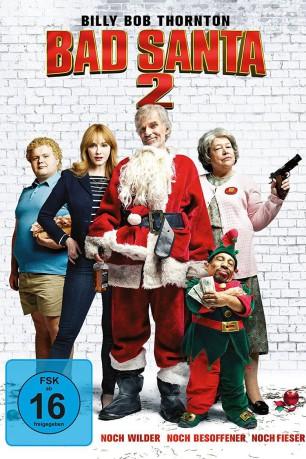
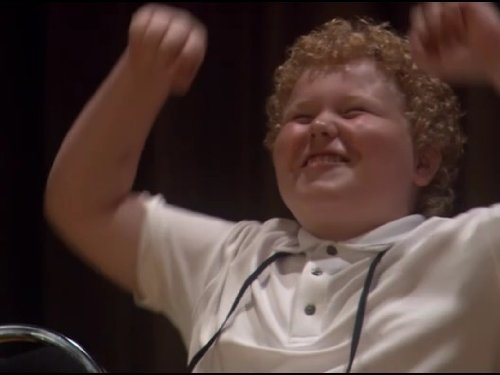

#5616 Bad Santa 2
 
 IMDB-Wertung: 5.5 / 10
IMDB-Wertung: 5.5 / 10  Tomatometer: 22
Tomatometer: 22  Metascore: 0
Metascore: 0 
Der gierige, hasserfüllte Weihnachtsbetrüger Willie Soke plant einen neuen Coup. Gemeinsam mit seinem kleinwüchsigen Kumpel Marcus als Elf und dem übergewichtigen Merman der immer wieder für kurze Augenblicke Willies Menschlichkeit hervorbringt, will der politisch inkorrekte Ganove mit Hang zum Zynismus, Alkohol und Sex am Weihnachtsabend eine Wohltätigkeitsveranstaltung in Chicago ausrauben. Diesmal wittert das Trio das ganz große Geschäft, bei dem eine Millionenbeute wartet. Doch sehr zu Willies Ärger verstärkt auch seine Mutter Sunny die Truppe, zu der er eine überaus schwierige Beziehung hat. Zusätzlich verkompliziert wird die Lage, weil sich Willie auch noch in Wohltätigkeitsdirektorin Diane verguckt...
Jahr: 2016
Dauer: 92 Minuten
FSK: 16
Land: USA Studio: Broad Green PicturesTonspuren: DTS - ,
Untertitel:
Auflösung: 1080p (1920x1040) Größe: 5355 MB
Genre: Drama, Komödie, Krimi
Regisseur: Mark Waters
Drehbuch: Joany Kane
Soundtrack:
Darsteller:
 Billy Bob Thornton als Willie Soke
Billy Bob Thornton als Willie Soke Kathy Bates als Sunny Soke
Kathy Bates als Sunny Soke Tony Cox als Marcus Skidmore
Tony Cox als Marcus Skidmore Christina Hendricks als Diane Hastings
Christina Hendricks als Diane Hastings-  Brett Kelly als Thurman Merman
 Ryan Hansen als Regent Hastings
Ryan Hansen als Regent Hastings- Jenny Zigrino als Gina De Luca
 Jeff Skowron als Dorfman
Jeff Skowron als Dorfman- Cristina Rosato als Alice
 Mike Starr als Jolly Santa
Mike Starr als Jolly Santa Octavia Spencer als Opal
Octavia Spencer als Opal- Selah Victor als Breast Feeding Mom
 Lombardo Boyar als Valet Boss
Lombardo Boyar als Valet Boss- Sean Devine als Jail Guard
- Maria Herrera als Bus Driver
- Christopher Tyson als AA Meeting Jason
 Tyrone Benskin als AA Group Leader
Tyrone Benskin als AA Group Leader- Bineyam Girma als Pedicab Driver
- Valérie Wiseman als Greta
- David Correa als Peeing Boy
- Kyle Switzer als Angry Drugstore Worker
- Huntington Daly als Mustang Owner
- Jason Brillantes als Valet
- Frank Fiola als Bartender
 Jason Cavalier als Chicago Policeman
Jason Cavalier als Chicago Policeman- Vlad Stokanic als Santa Con Bouncer
- Peter Andrianopoulos als Skating Santa , uncredited
 Mark Falvo als Concert Goer , uncredited
Mark Falvo als Concert Goer , uncredited Josh Harp als Bad Tinder Date , uncredited
Josh Harp als Bad Tinder Date , uncredited Philippe Hartmann als Jingle Bells Man , uncredited
Philippe Hartmann als Jingle Bells Man , uncredited- Habree Larratt als Girl , uncredited
- Christine Mao als Chinese Gangbanger , uncredited
- Galia Oliel-Sabbag als Skater Girl in Park , uncredited
 Nathaly Thibault als Mother with Twin Girls , uncredited
Nathaly Thibault als Mother with Twin Girls , uncredited- Ranee Lee als Choirmaster
- Dean Hagopian als Costume Greeter
- Marc-André Boulanger als Tattooed Jail Dude
- Arthur Holden als Buttslap Santa
- Violet Reid als Grand Rapids Girl
- Ethan Caminsky als Video Game Boy
- Daniela De Gregorio als Stuffed Cow Girl
- Piper Davies als Penguin Girl
- Noah Tran als Hand Grenade Boy
- Clarrel Pope als Valet
- Linda Nourse als Volunteer Greeter
- Richard Anderson als Santa Con Bouncer
- Dany Wiseman als Piano Player
- Nora Allison als Giving City Children's Choir
- Charlotte Birdgenaw als Giving City Children's Choir
- Atouel Chertkoft als Giving City Children's Choir
Datei: X:\2-Dilogie(A-F)\Bad Santa\Bad Santa 2 (2016, FSK16, 1920x1040).mkv seit 23.02.2017
Festplatte: HD Collection-2(A-Z)-3(A-M)
 Alle Filme aus Gruppe '2-Dilogie(A-F)\Bad Santa'
Alle Filme aus Gruppe '2-Dilogie(A-F)\Bad Santa'